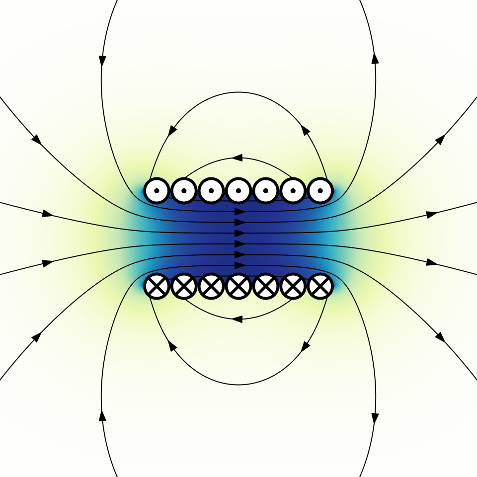
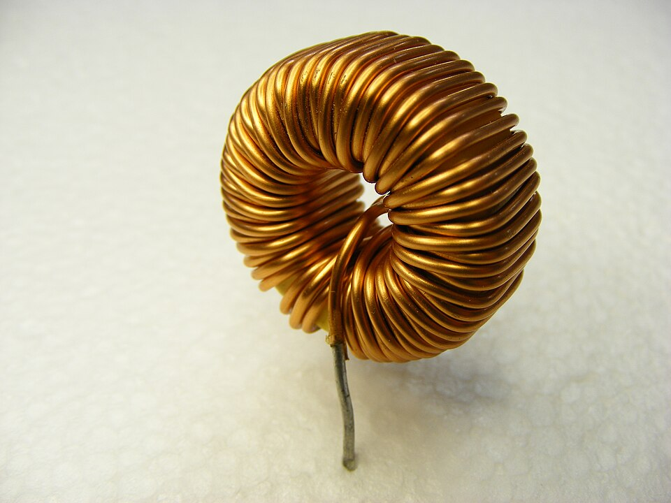

Os indutores são componentes eletrônicos que armazenam
energia em um campo magnético quando percorridos por
corrente elétrica. Eles são importantes em diversos
circuitos e equipamentos eletroeletrônicos.
Para compreender seu funcionamento, é necessário estudar
a relação entre corrente elétrica, campo magnético e
indução eletromagnética.
02 · Conteúdo técnico
Entenda como funcionam os indutores
O que é um indutor?
Um indutor é um componente geralmente formado por
um fio condutor enrolado em espiras. Quando a
corrente elétrica passa pelo fio, produz um campo
magnético ao redor da bobina.
O componente pode ter um núcleo de ar, ferrite
ou outro material magnético, dependendo de sua
finalidade.
O que é indutância?
A indutância representa a capacidade de um
componente de produzir uma tensão induzida quando
a corrente elétrica varia. Sua unidade de medida
é o henry, representado pela letra H.
A indutância depende de características como o
número de espiras, o formato da bobina e o
material do núcleo.
O que é eletromagnetismo?
O eletromagnetismo estuda a relação entre a
eletricidade e o magnetismo. Uma corrente elétrica
produz um campo magnético, e a variação do fluxo
magnético pode induzir uma tensão elétrica.
Esse princípio é importante para o funcionamento
de indutores, transformadores, motores e diversos
outros equipamentos.
Fórmula da tensão no indutor
V = -L × (ΔI / Δt)
Em que:
V: tensão induzida, em volts;
L: indutância, em henry;
ΔI: variação da corrente elétrica;
Δt: intervalo de tempo da variação.
O sinal negativo representa a oposição da tensão
induzida à variação da corrente, de acordo com a
convenção utilizada para a fórmula.
03 · Recursos visuais
Observe os indutores
As imagens ajudam a visualizar o campo magnético de
uma bobina e a aparência de um indutor utilizado em
circuitos eletrônicos.

Figura 1 – Campo magnético de um solenoide.
Autor: Geek3. Fonte: Wikimedia Commons.
Licença: CC BY-SA 4.0.
Arquivo original: VFPt Solenoid correct3 Babs.svg.

Figura 2 – Exemplo de indutor toroidal.
Autor: Peripitus. Fonte: Wikimedia Commons.
Licença: CC BY-SA 4.0.
Arquivo original: Toroidal inductor.jpg.
04 · Aplicações
Onde os indutores são utilizados?
Fontes de alimentação
Ajudam a filtrar oscilações e controlar a
corrente em circuitos eletrônicos.
Transformadores
Bobinas acopladas permitem transferir energia
elétrica por indução eletromagnética.
Rádios e comunicação
Indutores participam de circuitos que
selecionam determinadas frequências.
Motores elétricos
Campos magnéticos estão envolvidos na
conversão de energia elétrica em movimento.
Carregamento sem fio
Bobinas permitem transferir energia por
acoplamento eletromagnético.
Filtros eletrônicos
Indutores podem ajudar a reduzir sinais
indesejados em determinadas frequências.
05 · Curiosidades
Você sabia?
Uma bobina percorrida por corrente elétrica
produz um campo magnético.
O núcleo de um indutor influencia suas
características magnéticas.
Indutores podem ser encontrados em equipamentos
eletrônicos do cotidiano.
A unidade de indutância, o henry, recebeu esse
nome em homenagem ao cientista Joseph Henry.
06 · Resumo
Resumo para o caderno
Indutores são componentes formados geralmente por
espiras de fio condutor que armazenam energia em
um campo magnético. Sua propriedade principal é a
indutância, medida em henry (H). Quando a corrente
varia, surge uma tensão induzida que se opõe à
variação da corrente. Os indutores são utilizados
em fontes de alimentação, filtros, transformadores,
rádios e outros equipamentos eletroeletrônicos.